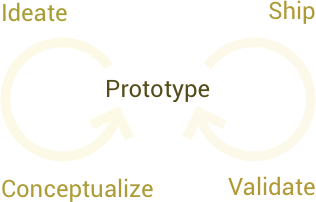

Requirements analysis & docs
I do requirements engineering because it saves you money, helps to progress more efficiently and builds a much greater value for you.
Not without reason a lot IT projects fail or go into the wrong direction. I will mitigate this trap and help you retain the upper hand.
Software architecture & DevOps
I design microservice architectures with Docker. Building your production setup right into your development process will save you cost and hugely increase flexibility.
Dockerization is an opportunity you should not miss, and it's available for existing applications!
Fullstack app development
I’m a fullstack Javascript developer inside-out:
- MongoDB, Redis
- React.JS, Meteor.JS, Angular.JS
- node.js, Titanium, Cordova
- frontend & backend
Many more frameworks and platforms are on my list.